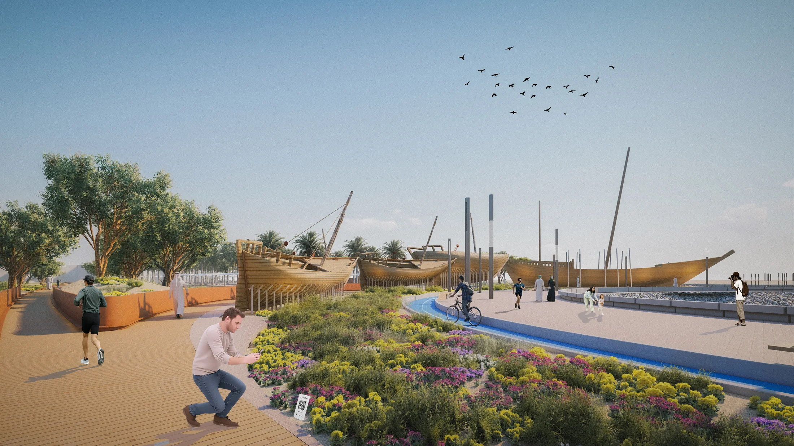
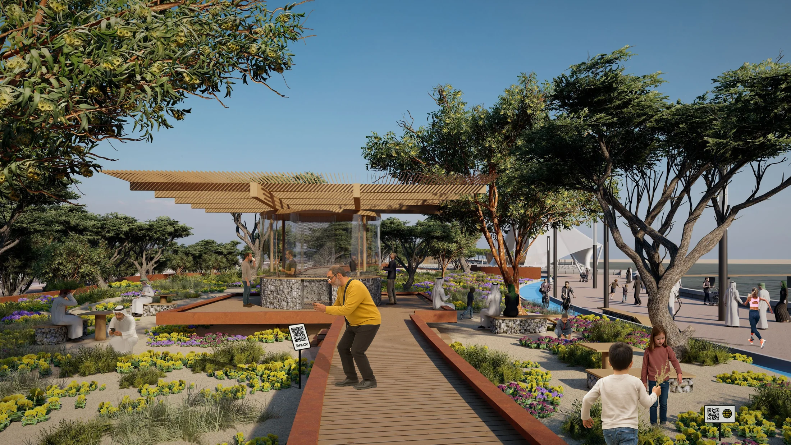
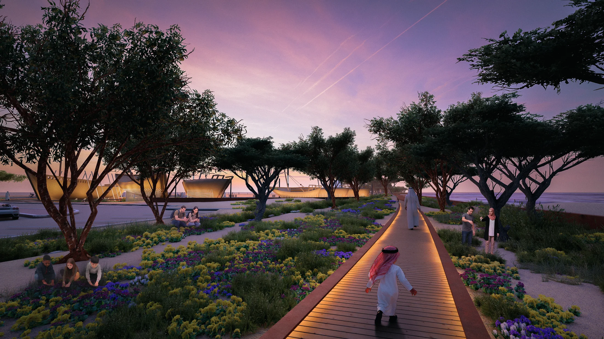
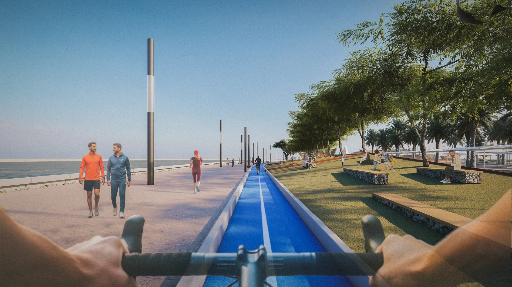
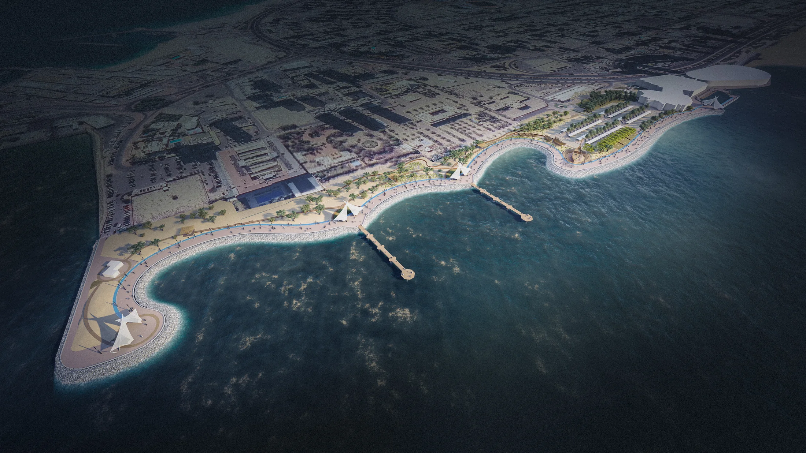

Scientific Center — Historic Dhow Landscape
A landscape and visitor-experience study for relocating historic dhow ships and giving them a new spatial relationship to the Scientific Center grounds and waterfront.
OfficeRoTo Architects
LocationKuwait
Project TypeLandscape + Cultural Display
FocusVisitor circulation / artifact setting

Object, landscape and movement
The project treats the historic vessels as more than objects placed on a site. Paths, planting, lighting and topography become a sequence for approaching and understanding the dhows from multiple distances and viewpoints.
The landscape also had to function as public space: supporting walking, cycling, shade and waterfront activity without diminishing the presence of the vessels.




